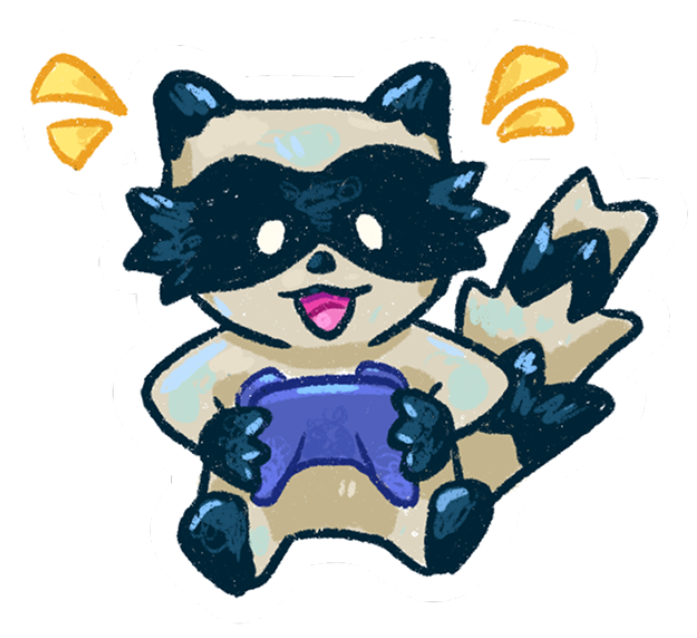
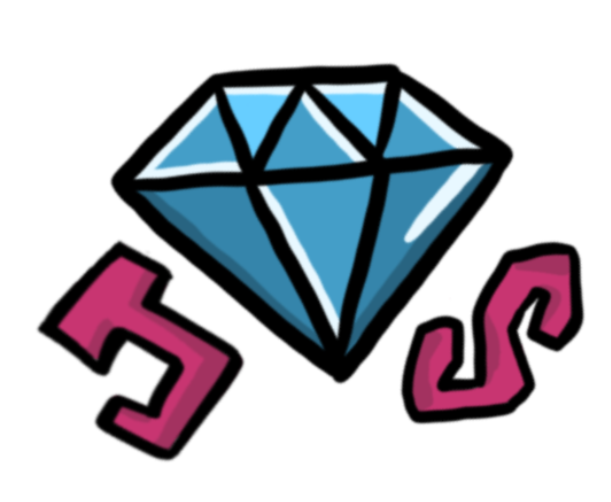

How It Works
Build a 2D platformer game in 1-2 hours! Learn how to use Godot, GitHub, and Itch.io. Then you'll be ready for Daydream!
Use the resources below to create and publish your game.
1. Build Your Game
Godot is a free game engine.
Set up GitHub and use the resources below to build your platformer.
2. Make It Unique
Add your own style, story, and features. Get inspired by other games below!


Signal Lost
A space platformer with gravity changing and dangerous plants.
Made by Estella Gu, you can play it at here!

Cocytus
A cave platformer where you move with your mouse.
Made by Sarah Ngai, you can play it at here!

Echoes
An adventure platformer where you move with a lantern.
Made by Olive Wu, you can play it at here!

PlatformLand
A land platformer where you explore ancient ruins and avoid dangerous biomes.
Made by Julia Nadolska, you can play it at here!

4. Submit Your Game
Submit your project! You'll get an approval email in about a week.
